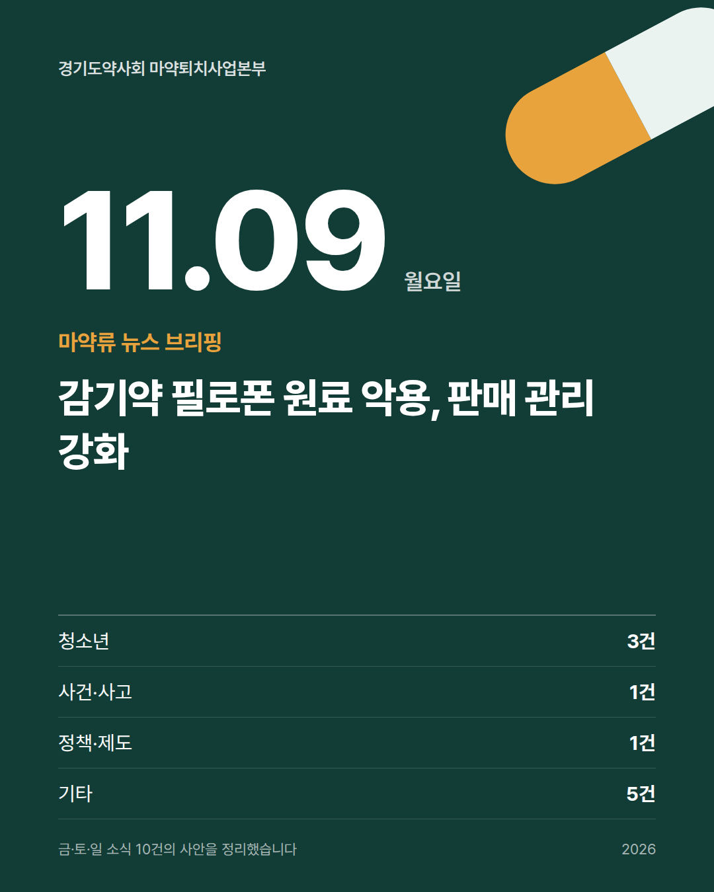
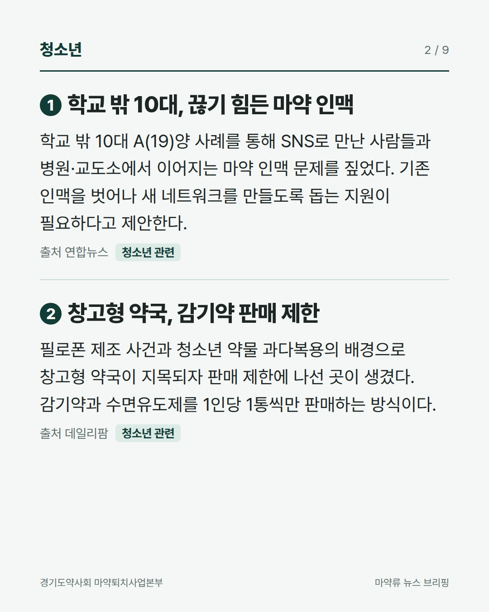
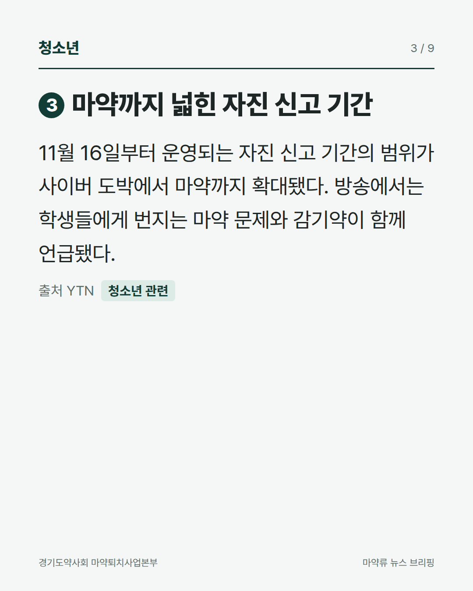
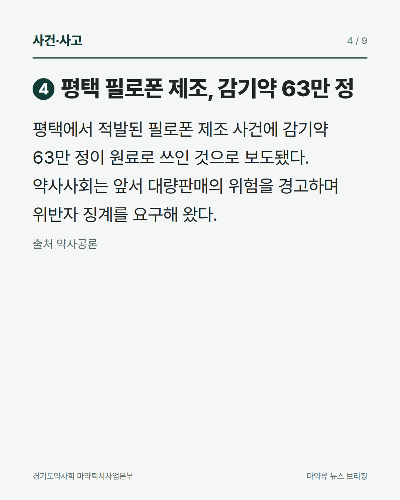
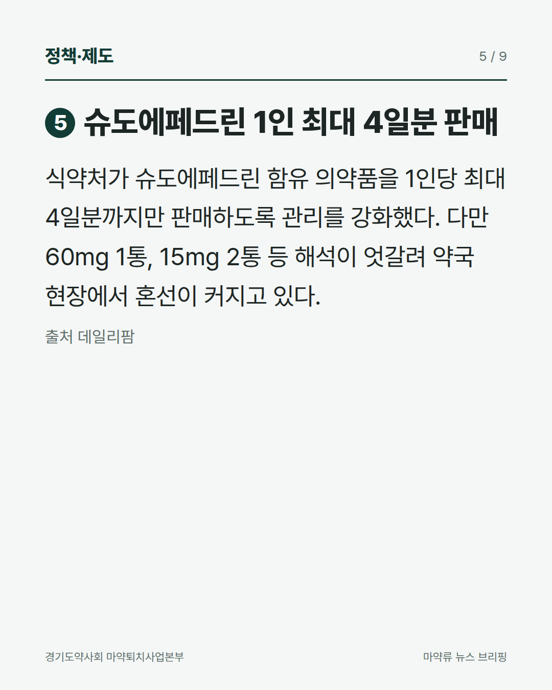
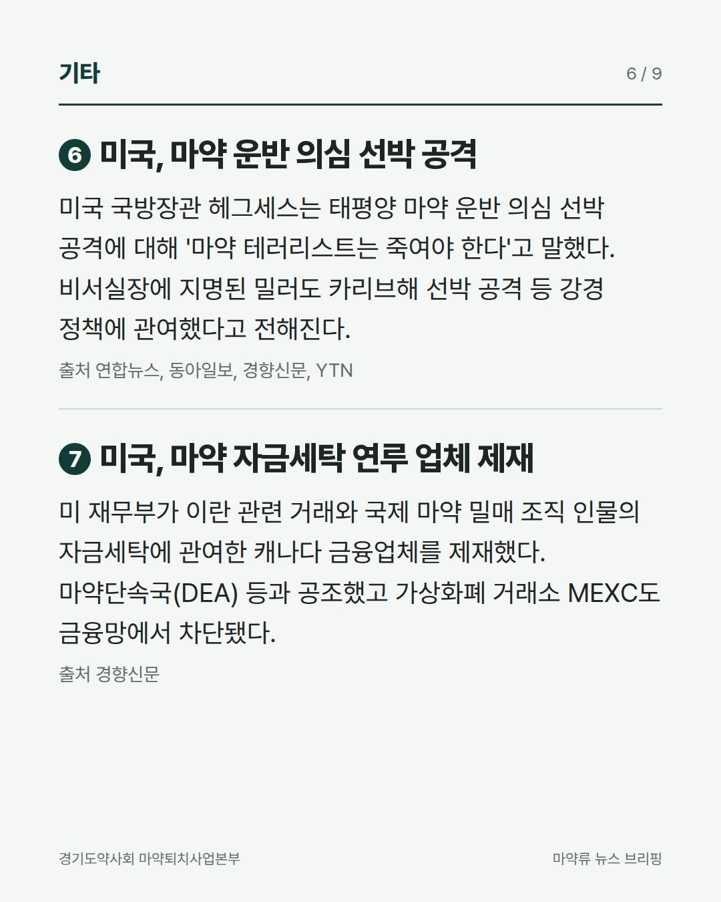
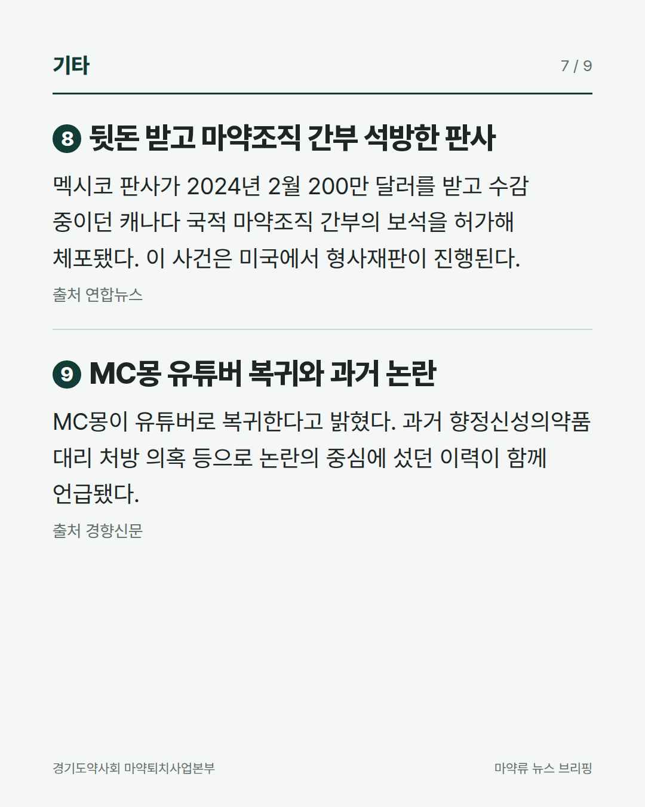
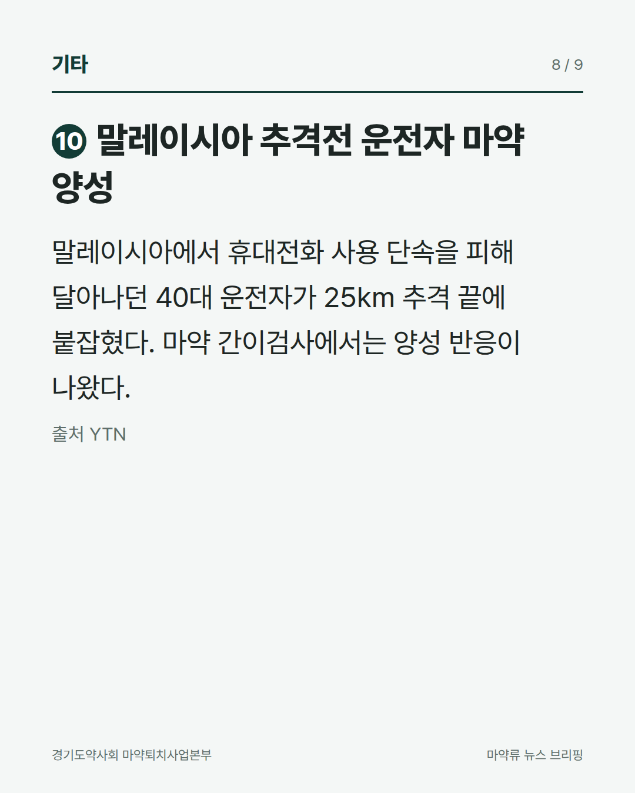
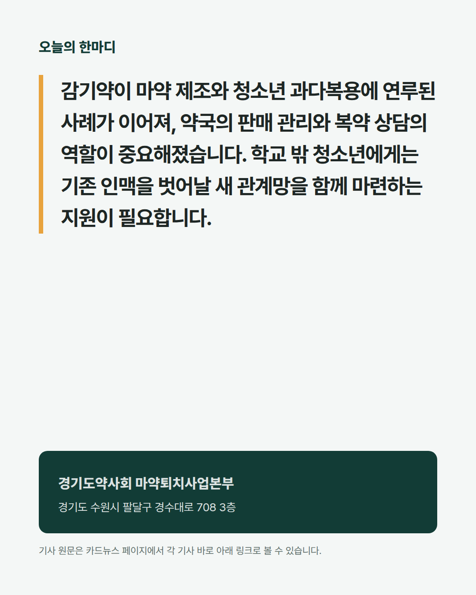

경기도약사회 마약퇴치사업본부
마약류 뉴스 브리핑 2026.11.09


2창고형 약국, 감기약 판매 제한
데일리팜 원문 보기 →
3마약까지 넓힌 자진 신고 기간
YTN 원문 보기 →
4평택 필로폰 제조, 감기약 63만 정
약사공론 원문 보기 →

7미국, 마약 자금세탁 연루 업체 제재
경향신문 원문 보기 →
8뒷돈 받고 마약조직 간부 석방한 판사
연합뉴스 원문 보기 →9MC몽 유튜버 복귀와 과거 논란
경향신문 원문 보기 →
10말레이시아 추격전 운전자 마약 양성
YTN 원문 보기 →
경기도약사회 마약퇴치사업본부